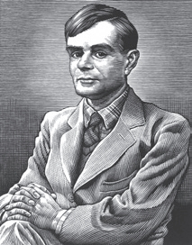
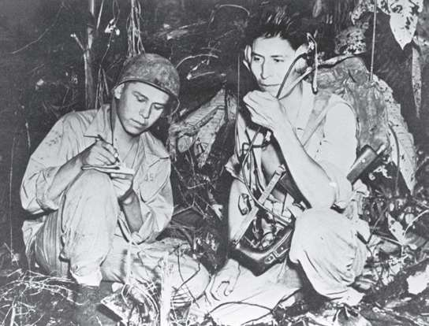

日本自主发明了两种编码系统，分别是：“紫色”（Purple）和JN-25。第一个为外交通信专用，第二个用来发送军事信息。两种密码机都是通过机械装置驱动的。拿JN-25来说，其构成是替换算法，将日语的书写字符（最大限度为30 000字符）转换为数字，数字则是通过五个数组表任意指定的。虽然日本早有防备，但英国和美国还是破译了“紫色”和JN-25。情报部门将破译了“紫色”和JN-25的密码所截获的情报用“Magic”（魔术）这一代号来命名，这在太平洋战争的关键战役中，尤其对1942年的珊瑚海海战和中途岛战役具有巨大的影响。Magic的情报同样还用来制订战略计划，比如指导盟军1943年击落日本军事指挥官山本五十六的座机的行动。
美国截获了敌军在太平洋战场作战计划的情报，充分利用这份情报的同时，美国对自己的军事通信也用了几种加密方式，将加密算法直接置于语言的自然属性层面。这些密码就是乔克托、科曼奇、麦斯奎基，以及人数最多的纳瓦霍（均为北美印第安部族）等族的语言，既没有明确编写成复杂的手册，也未经明智的加密部门筹划，它们只是北美印第安各族的语言。
旷世天才
1912年，阿兰·图灵生于英国。少年时代，他就在数学和物理方面展现出极高的天赋。1931年，他考入剑桥大学，在那里，逻辑学家库尔特·哥德尔（Kurt Gödel）的研究吸引了他的兴趣。哥德尔研究的是所有逻辑体系的固有不完整性的一般性问题。三年前，他就构建某种机器的理论可能性发表了一篇论文，这种机器能够运算诸如加法、乘法等不同算法。受哥德尔研究的启发，1937年，图灵将有限的证明和计算向前推动了一步，并构建了“通用机器”的原理，这台机器能够执行所有可能的算法，现代信息理论的支柱之一就此诞生。在此之前的两年，图灵曾与伟大的匈牙利数学家亚诺什·冯·诺依曼（János von Neumann）有过接触，当时冯·诺依曼住在美国，大家都叫他约翰。人们把冯·诺依曼称为“另一位计算机之父”，他给图灵在普林斯顿提供了一份薪水和地位都很高的工作，但图灵拒绝了，他更喜欢剑桥波希米亚式（不拘于传统）的氛围。1939年，战争爆发，他加入位于布莱切利庄园的英国密码分析团队。图灵在战争期间的突出贡献为他赢得了大英帝国勋章，但他是同性恋，这在当时是非法的。1952年图灵被判有罪，无法继续承担政府的保密工作。1954年6月8日，因提起的反诉被驳回而心生绝望，阿兰·图灵吞下氰化钾自杀身亡。

美军在这些印第安人中挑选出无线电操作员，分组安排在前线，用各自的语言传递信息，这样一来，不光是日本人不懂，除了这些印第安无线电操作员，其他美军士兵也不懂。这些加密信息中还叠加了一套基本密码，以防士兵被捕后被敌方强行逼供将信息翻译出来。朝鲜战争之前，这些“密码员”一直在美军服役。

1943年，布干维尔岛战役中的两名纳瓦霍人“密码员”。